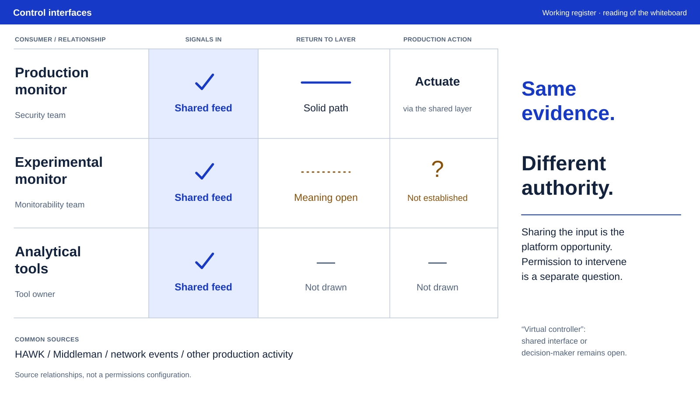

Register
The table is the page. The conclusion lives in its annotation margin.

Begin with repeated rows. Compare the return paths, then read the exception. Compact labels and alignment carry the hierarchy; there is no presentation heading above the data.
Text equivalent and limits
The production monitor, experimental monitor and analytical tools all receive shared signals. Their attached relationships are security team, monitorability team and tool owner. The production monitor has a solid return and actuator path; the experimental return is dotted with meaning and authority open; analytical tools have no return or action path drawn. HAWK, Middleman, network events and other activity supply the common signals. This is a reading of a sketch, not configured permissions. Virtual controller remains unresolved between shared interface and decision-maker.
This approved static reference interprets a control-program proposal. It is calibration material, not a deployed system or factual input for another artifact.